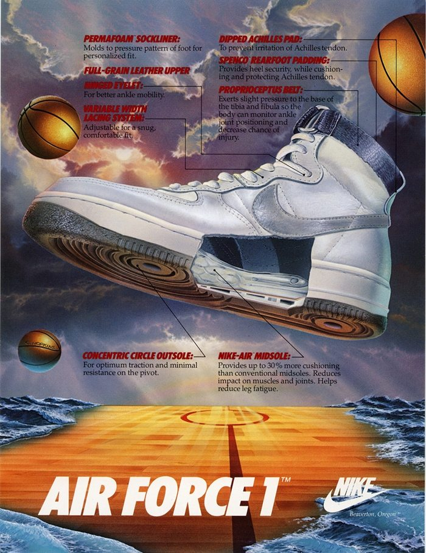
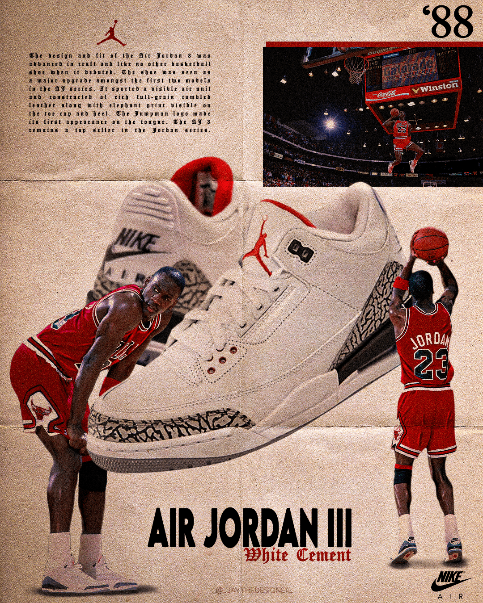
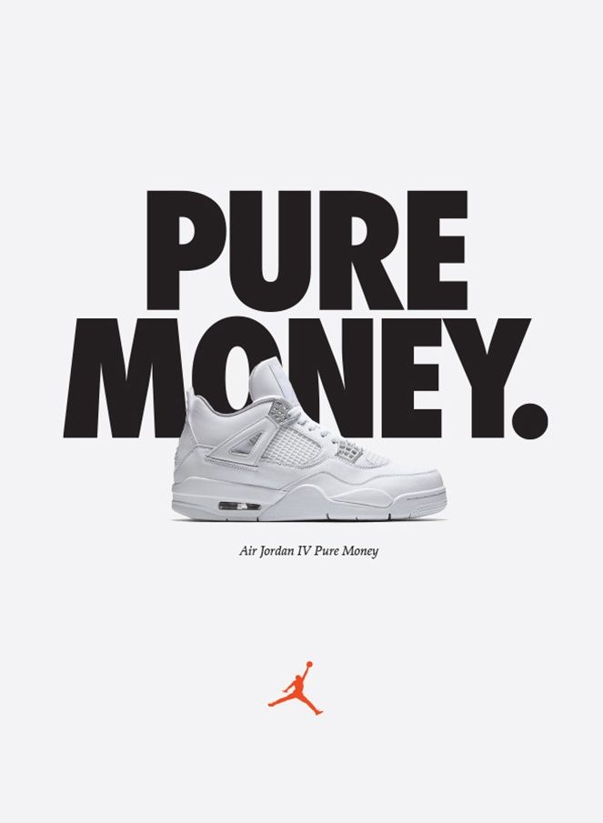
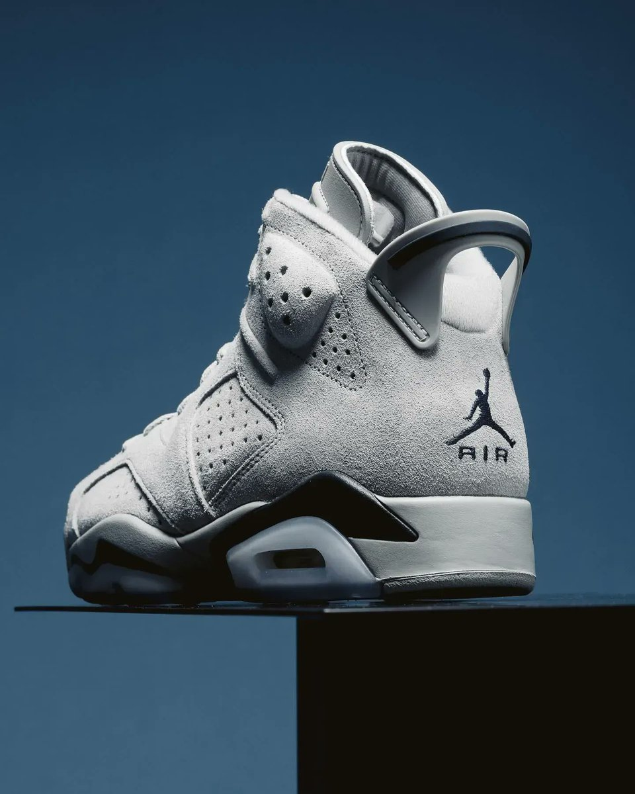

Обувки
Jordan 1
- Забранени от NBA, но Nike използва забраната като маркетинг и създава модерния спортен бранд.
- Първите Jordans стават символ на бунт в черната младежка култура през 80-те.
- Днес се носят повече като улична мода, отколкото като баскетболна обувка.

Jordan 3
- Първият Jordan с видима Air възглавница – революция в дизайна и технологията.
- Спасили договора на Джордан с Nike, когато той е бил близо до напускане.
- Elephant print дизайнът прави обувката разпознаваема дори без лого.

Jordan 4
- Първите Jordans, официално разпространявани глобално извън САЩ.
- Стават масово популярни извън спорта след появата си във филма Do the Right Thing.
- Символ на навлизането на Jordans в хип-хоп и уличната култура.

Jordan 6
- Създадени с мисъл за комфорт извън игрището – езичета и отвори за бързо обуване.
- Първият Jordan модел, който се възприема като „луксозен“ спортен продукт.
- Бележат прехода от спортна обувка към lifestyle символ.

Jordan 11
- Първият масов баскетболен модел с лачена кожа – считано за „немислимо“ дотогава.
- Носени масово и с костюми – дори на официални събития.
- Смятани за обувката, която окончателно превръща маратонките в статус символ.